AI Academy · Level 1 · Grade 6 · Week 4 · Student lesson
Rules or Learned Patterns?
Learn to understand, design, build, test and explain AI systems responsibly.
Project: Helpful Classroom Sorter
Before you start
Week 1: identify human control, a written rule and learning from examples.
Plan time to read, investigate and explain. Keep predictions separate from observations.
Student lesson · 1 of 18
Your mission
Start with the target: Execute a stated rule including its boundary. Try the recall before opening notes.
Your learning target
I can execute a stated rule including its boundary.
I can select a rule by comparing errors on labelled examples.
I can explain why agreement with fitting examples does not establish performance on new cases.
Remember before reading
Close your notes first. A rough first answer helps us choose the right starting point; it is not a score for your ability.
Without opening the old lesson, explain one key idea from Sensors Are Messengers. Give an example and a mistake that the idea helps you avoid.
Without opening the old lesson, explain one key idea from AI or Not?. Give an example and a mistake that the idea helps you avoid.
After trying, check the relevant lesson or ask your teacher. Change the part of your explanation that the evidence shows was wrong.
Fixed instructions and learned behavior can look similar but arise differently.
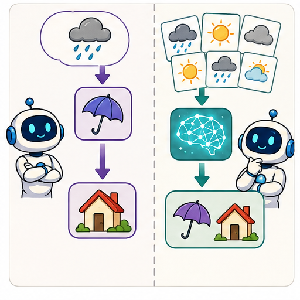
Your target
LEARNING TARGET Sorter A follows 'red left, blue right'. Sorter B was trained using labelled red and blue cards. Both send a purple card left. Does their shared output show that they used the same process?
What evidence is missing?
Learner name:
Readiness for the connected explanation
A warning uses temperature greater than 28 degrees C. What happens at exactly 28, and what must be checked before comparing a recorded number with 28?
This week’s end goal
By the end, I can distinguish choosing a rule from applying an already chosen rule.
Student lesson · 2 of 18
Notice the evidence
Investigate the supplied Rules or Learned Patterns? case. Separate observations, given facts and assumptions before choosing an explanation.
PICTURE STORY
Look Closely Before You Explain
Pictures give clues; evidence tells us what the clues mean.

Start with this puzzle
MYSTERY A motion light and an animal recognizer both react to input, but one checks a written condition while the other uses patterns learned from examples.
What do you notice?
Name three visible details without explaining them yet.
Circle the detail most connected to the system's decision.
Name one detail that may be decoration or distraction.
Make a first prediction and state the clue that supports it.
My observations, prediction, and evidence:
Thinking habit
GOOD THINKING A prediction can change when stronger evidence appears.
A closer explanation
A paper sorting task describes imaginary cards. Each card has a width in centimetres and a recorded label, narrow or wide. One person writes a rule from a design requirement: label a card wide when its width is at least 5 cm.
Another person compares several candidate thresholds with labelled examples and chooses the one with fewest disagreements. Both may end up using the same threshold, but they selected it in different ways.
Executing a rule means applying it to an input. Fitting means using examples to select or adjust the rule or model. A fitted model can be very simple.
We do not need a brain-like picture or a complicated computer to study the difference between selecting a rule and using it.
In this exercise the labels are supplied by the task designer. They are not a universal definition of wide, and a centimetre value alone would not determine every possible meaning of that word.
State what the recorded labels mean in the task before counting disagreements.
Student lesson · 3 of 18
See how it works
Follow the mechanism for Rules or Learned Patterns?. Connect each labelled input, deciding step and result.
VISUAL MECHANISM
Input → Process → Output
Follow the information instead of imagining magic inside the machine.
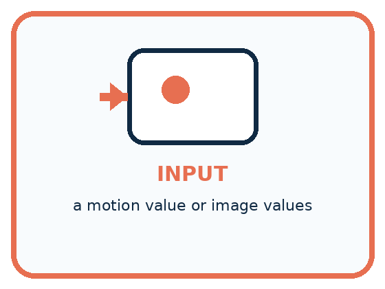
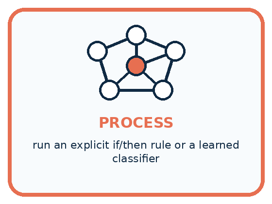
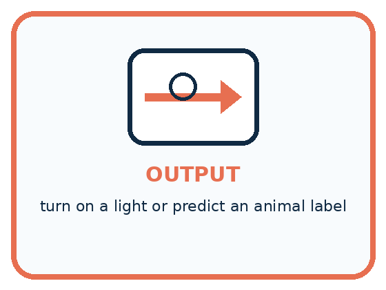
INPUT a motion value or image values
PROCESS run an explicit if/then rule or a learned classifier
OUTPUT turn on a light or predict an animal label
Key idea
CORE IDEA Fixed instructions and learned behavior can look similar but arise differently.
How the mechanism works
UNDER THE HOOD A fixed program's decision logic is specified directly by people. A learned model's parameters are fitted from examples.
Both are software, both may be complex, and both can fail; the distinction is how the decision behavior was produced.
Draw a fresh example with all three stages:
A closer explanation
How a threshold is selected and then applied
For threshold t, our rule predicts wide when width is at least t and narrow otherwise. At least includes equality: with t=5, width 5 is wide. Changing at least to greater than changes the rule and may change the error count.
A fitting procedure also contains choices people made: the feature, candidate thresholds, label definition and way of counting errors. Calling a threshold learned does not remove human responsibility for those choices.
Connect the picture and the explanation
Point to the input, the deciding step and the result in this week’s visual. Explain the same step in ordinary words. A picture helps when you can say what each part represents.
Student lesson · 4 of 18
Compare the cases
Compare the supplied cases for Rules or Learned Patterns?. Identify the detail that changes the conclusion.
PICTURE GALLERY
Four Cases, Four Clues
Use the visual cue, then read the evidence carefully.
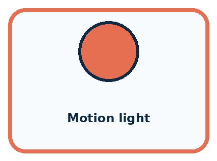
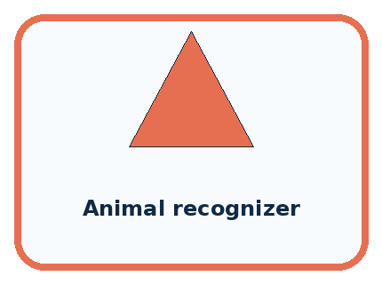
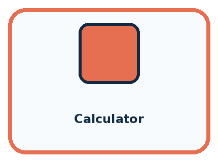
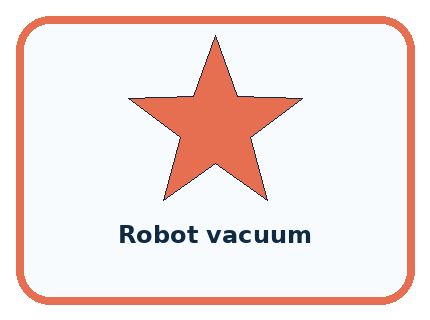
The case to investigate
CASE 1 — Motion light Clue: IF motion, THEN light on. Meaning: fixed rule.
The case to investigate
CASE 2 — Animal recognizer Clue: trained on labeled images. Meaning: learned pattern.
The case to investigate
CASE 3 — Calculator Clue: follows arithmetic procedures. Meaning: fixed even when complex.
The case to investigate
CASE 4 — Robot vacuum Clue: behavior alone is incomplete evidence. Meaning: could be fixed, learned, or mixed.
Keep this boundary clear
BOUNDARY Do not use complicated versus simple as a substitute for fixed versus learned.
Which two pictures are easiest to confuse? What evidence separates them?
Change one thing in the pictured case
Change one thing
Change: Give a new pebble diameter 5 instead of 4.
Predicted result
Prediction: The selected rule predicts large.
Why the result follows
Reason: At least includes equality, so 5 meets the boundary.
Student lesson · 5 of 18
Words that unlock the idea
Use the vocabulary of Rules or Learned Patterns? to explain a concrete decision, rather than only memorising definitions.
VOCABULARY
Words You Can See and Use
The badge is a memory cue; the definition does the real thinking work.
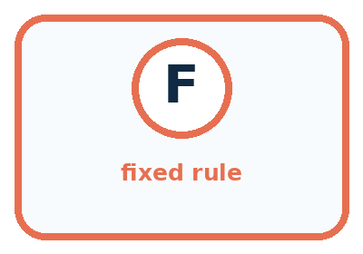
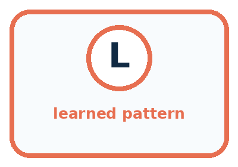
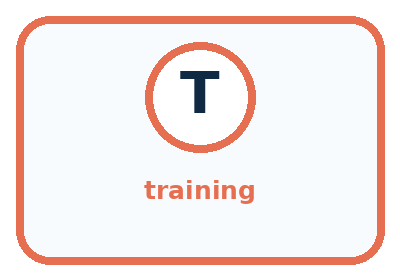
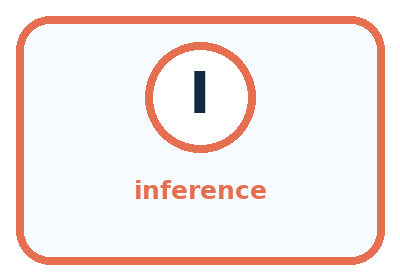
| Word | Meaning | My example |
|---|---|---|
| fixed rule | instruction written directly in advance | |
| learned pattern | relationship fitted from examples | |
| training | process that adjusts a model from examples | |
| inference | using the finished model on a new input |
Misconception detective
Find the unsupported claim
CLAIM TO REPAIR If the output changes, the system must be learning.
Use one vocabulary word and one piece of evidence to repair it:
WORD POWER A strong definition helps you decide something in a new case.
Words used in the closer explanation
| Word | Meaning |
|---|---|
| Feature | A recorded property used as an input to a decision or model |
| Label | A recorded category or target associated with an example |
| Threshold | A boundary value used in a comparison |
| Fitting | Choosing or adjusting a model using examples |
| Error count | The number of predictions that disagree with the comparison labels |
Student lesson · 6 of 18
Follow a worked example
Follow the worked trace for Rules or Learned Patterns?, predict a step, then compare with its explanation.
WORKED EXAMPLE
Watch the Reasoning, Not Just the Answer
Every step connects a claim to observable evidence.

The case to investigate
CASE A motion light and an animal recognizer both react to input, but one checks a written condition while the other uses patterns learned from examples.
Step 1
STEP 1 — OBSERVE a motion value or image values
Step 2
STEP 2 — TRACE run an explicit if/then rule or a learned classifier
Step 3
STEP 3 — CONCLUDE turn on a light or predict an animal label
Model answer
MODEL REASONING The motion light follows a directly written sensor condition. The animal recogniser uses a model fitted on labelled examples.
Observing that both react to input does not tell us how their decisions were produced.
A claim to avoid
DO NOT OVERCLAIM Do not use complicated versus simple as a substitute for fixed versus learned.
What new evidence could change this answer?
A closer explanation
| Width in cm | Supplied label | Threshold 3 prediction | Threshold 5 prediction |
|---|---|---|---|
| 2 | narrow | narrow | narrow |
| 4 | narrow | wide | narrow |
| 6 | wide | wide | wide |
| 8 | wide | wide | wide |
Worked explanation · Rules or Learned Patterns?
Apply threshold 3 to each width before checking the label. Only width 4 disagrees, so its error count is 1. Threshold 5 agrees on all four examples, so its error count is 0. Of these two candidates, this procedure selects 5.
Zero disagreements here means it fits these four labels; it is not a guarantee about all future cards.
Worked explanation · Rules or Learned Patterns?
There can be ties. Threshold 6 also agrees on these four examples because 6 is included by at least. Thresholds 5 and 6 predict differently for width 5, which is absent from the fitting set.
The available examples therefore do not uniquely determine how that width should be labelled. A procedure needs an explicit tie rule, and we should record the unresolved case.
Learn from the worked case
Cover the result before checking it. Say what is given, choose the procedure, and follow one step at a time. Then uncover the result and explain your first mismatch. Ask why a step is allowed, not only what number it produces.
A pictorial worked case: Rules or Learned Patterns?
A fictional paper sorter learns a size boundary for toy pebbles.
The facts we will use
Supplied facts
Training diameters are 1,3,5,7 cm with labels small,small,large,large.
Supplied facts
Compare large-at-least-3 with large-at-least-5; choose fewer errors.


Read the picture one step at a time
Why this result follows
Why the result follows
The learning procedure compares candidate rules against supplied examples and selects boundary 5. Applying that boundary to diameter 4 is a later prediction step.
An explicit threshold can be selected from data; being easy to write does not make its origin unknowable.
What this example does not establish
Keep the stated limit
Zero training disagreements do not prove every future pebble receives the correct label.
Keep the stated limit
Read the labelled picture: Show which stage used labels and which stage used only the new measurement.
Keep the stated limit
Change one thing: Give a new pebble diameter 5 instead of 4. Predict the result before checking the explanation. What remains the same?
Student lesson · 7 of 18
Find and repair a mistake
Find the unsupported step in the Rules or Learned Patterns? claim and explain a repair using the supplied evidence.
COMPARE
Same Result, Different Reason
A comparison helps reveal the true concept boundary.
| Case | Evidence | What it shows |
|---|---|---|
| Motion light | IF motion, THEN light on | fixed rule |
| Animal recognizer | trained on labeled images | learned pattern |
| Calculator | follows arithmetic procedures | fixed even when complex |
| Robot vacuum | behavior alone is incomplete evidence | could be fixed, learned, or mixed |
Repair two tempting claims
Challenge claim A
CLAIM A If the output changes, the system must be learning.
Repair:
Challenge claim B
CLAIM B A fixed program can never be useful or intelligent-looking.
Repair:
A frame for explaining
STRONG ANSWER FRAME I claim ______ because the evidence shows ______. The process is ______. One limit is ______.
A closer explanation
Check the claim against the facts
Suppose a new card has width 5 and its supplied task label is narrow. The selected threshold 5 predicts wide, so it disagrees on this case. Do not erase the example to preserve a perfect score.
Record the error and investigate whether the labels follow a different definition, whether measurement matters or whether width alone is insufficient.
For this week's paper task, a prediction is only a proposed category. It does not authorise a physical action.
More consequential applications require additional checks and human decisions that a small fitting exercise cannot establish.
Student lesson · 8 of 18
Practise together
Practise Rules or Learned Patterns? with support, then explain the deciding step in your own words.
GUIDED PRACTICE
Try It, Check It, Explain It
Use support now so you can succeed independently later.

Explain how the picture story demonstrates this idea: Fixed instructions and learned behavior can look similar but arise differently.
Use a fresh example to explain fixed rule.
Trace a new input → process → output example.
Find and repair the error in: A fixed program can never be useful or intelligent-looking.
Invent one edge case and name the safe response.
Check with a partner
PARTNER CHECK Point to the evidence. Do not accept an answer that only repeats the vocabulary word.
A closer explanation
Now use widths 1, 3, 5 and 7 with labels narrow, narrow, wide and wide. Compare candidates 3 and 5, using the same at least rule. Write all four predictions for each candidate before you count.
This prevents a plausible-looking total from hiding a boundary mistake.
Keep this comparison separate from a final check on unseen cases. If we repeatedly choose a threshold after looking at the check answers, those cases have helped us fit the rule.
They no longer provide an independent check of our finished choice.
Practise with less help: Complete the supported comparison
Use workbook W2 for the connected example “Rules and learned patterns”. First fill the input and rule boxes. Try the middle steps before asking for a hint. After a hint, try the next step yourself.
| Plan | Do | Check |
|---|---|---|
| What is given? Which rule or procedure applies? | Record each intermediate step. | Does the result follow? What remains unknown? |
Explain your trace to a partner. Your partner points to one step to check. Swap roles on the next case. Each person writes their own explanation.
Check your reasoning
Use the worked case for Rules and learned patterns. Proposed explanation: “A learned rule cannot be written simply”. Decide whether this explanation is supported.
Point to the step or supplied fact that decides; explain your repair if needed.
Answer on your own before discussion. If you are unsure, say which step you need help with.
Explain the picture
Show which stage used labels and which stage used only the new measurement.
This is supported practice. Keep the separately named independent case for an attempt before feedback.
Student lesson · 9 of 18
Run the investigation
Investigate Rules or Learned Patterns?. Record the prediction, actual observation or labelled paper trace, explanation and next test separately.
EXPLORER LAB
Same Behavior, Different Cause
Predict first, test honestly, and explain what the evidence means.

1. Predict
State your prediction before the result is known.
2. Investigate
Complete the task: Compare a motion light with an animal recognizer.
3. Compare cases
Keep a normal case and an edge case clearly separated.
4. Record honestly
Record what happened—even when it does not match your prediction.
5. Explain and plan the next test
Explain the result, one limitation, and the next useful test.
| Case | Prediction | Observed result | What it means |
|---|---|---|---|
| Normal | |||
| Edge |
Use a fresh case after support
INDEPENDENCE After support is removed, repeat the proof with a fresh case.
Plan → try → check
Before trying: what do I expect, and why? While trying: which step could first go wrong? Afterwards: what did I actually observe, and what should change? Keep “not run” if you only traced the procedure.
Student lesson · 10 of 18
Build your understanding
Move from recall to tracing, diagnosis and transfer in Rules or Learned Patterns?. Explain why each step is justified.
PRACTICE LADDER
Climb from Recall to Defense
Each step asks for a stronger kind of understanding.

RECALL Define fixed rule.
EXPLAIN Fixed instructions and learned behavior can look similar but arise differently.
TRACE Show the input, process, and output.
DIAGNOSE Repair: If the output changes, the system must be learning.
TRANSFER Apply the idea to a new home or classroom case.
CREATE Design one revealing test.
DEFEND Give a claim, evidence, mechanism, limit, and safe action.
When to retry
RETRY RULE A coached answer becomes mastery only after you solve a different case independently.
Student lesson · 11 of 18
Connect your project
Apply this week’s idea to Helpful Classroom Sorter. Keep an annotated decision and the evidence supporting it.
PROJECT
Helpful Classroom Sorter
Build one coherent system across the year, one evidence-based decision at a time.

THIS WEEK'S CHECKPOINT Draw a fixed-rule version and a learned-pattern version of the Classroom Sorter; state what evidence would justify the learned version.
What real classroom need does this serve?
What information is necessary—and what should stay private?
What happens inside the process?
What normal and edge cases will you test?
When should it say not sure or ask a person?

Responsible design
RESPONSIBLE DESIGN Do not use complicated versus simple as a substitute for fixed versus learned.
My project decision:
Evidence for your project
Document whether the sorter’s rules were teacher-written or chosen from examples, retaining candidate errors.
Student lesson · 12 of 18
Show what you know
Use a genuinely new case for independent evidence. Previously discussed examples remain practice; use the separately named independent case before feedback.
MASTERY
Fresh-Case Independent Proof
Complete this after teaching and guided practice have ended.

What success looks like
REQUIRED PROOF Two feeders release food at noon. One checks the clock; the other predicts a feeding time from past activity. Explain the mechanism difference.
□ Name or draw the fresh case.
□ Trace input, process, and output.
□ State the conclusion and strongest evidence.
□ Name one limit, failure, missing clue, or fairness/privacy concern.
□ Explain one safe next action or improvement.
Independent evidence:
Check your explanation
SELF-CHECK The motion light follows a directly written sensor condition. The animal recogniser uses a model fitted on labelled examples. Observing that both react to input does not tell us how their decisions were produced.
My level: □ Not yet □ With one hint □ Independently □ I can teach it
Connect to the next lesson
NEXT BRIDGE Carry today's evidence habit into: Pictures Become Numbers.
Student lesson · 13 of 18
Study a complete case
Revisit the complete Rules or Learned Patterns? case for supported practice. Repeated examples do not become fresh assessments.
Week 4 Worked case
Use the supplied details to practise the weekly concept before attempting the independent question. This case extends the illustrated lesson.
The situation
Sorter A follows a written red-card-left rule. Sorter B is fitted using labelled leaves.
The question
How were their decision processes obtained? Where should A send blue cards?
Worked explanation
A was explicitly programmed; B learned parameters from examples. Blue-card handling is unspecified, so request a rule. Both systems can fail.
Explain it in your own words
Which detail supports the answer, and why does it matter?
Scope note: this course mainly studies learning from examples. AI also includes symbolic and rule-based approaches. Ask how a system reasons or learns; a robot body or a simple automatic switch is insufficient evidence.
Trace the supplied case visually
Where did the decision come from?
| Evidence or stage | Value or result |
|---|---|
| Written rule | Red card goes left |
| Learned pattern | Fit using labelled leaves |
| Missing rule | Blue-card action unspecified |
Sorter A follows a written red-card-left rule. Sorter B is fitted using labelled leaves.
How were their decision processes obtained? Where should A send blue cards?
A was explicitly programmed; B learned parameters from examples. Blue-card handling is unspecified, so request a rule. Both systems can fail.
Student lesson · 14 of 18
Try a new case independently
Attempt the reserved new case before feedback. Record support; the earlier examples below remain additional practice.
Independent case: Fit a new paper classifier
A fictional sorting task has lengths 2, 5, 7, 9 cm with labels short, short, long, long. Candidate rules predict long when length is at least 5 or at least 7.
List predictions and errors for both, choose one, and predict a new length of 6 before any label is revealed. State one limit of your conclusion.
Attempt this case before feedback. Record any help. Earlier examples below are further practice; a case already practised with feedback cannot establish fresh transfer.
Week 4 Independent application
Close the worked explanation. Apply the idea to this different question without copying.
System A uses the written rule green means go. System B learns fruit labels from example photographs. Who supplies A's rule? What changes when B is trained on different examples?
My answer, with a trace, calculation or supporting evidence
Create and test
Change one relevant detail. Predict the result before testing. Include a boundary or missing-information case when it helps reveal a limit.
My changed input and expected result
Connect to your project
Draw a fixed-rule version and a learned-pattern version of the Classroom Sorter; state what evidence would justify the learned version.
The evidence I will keep
Your teacher has the independent answer and scoring criteria. Complete the matching workbook week to keep your practice evidence together.
Transfer practice from the original programme
Sorter A follows 'red left, blue right'. Sorter B was trained using labelled red and blue cards. Both send a purple card left. Does their shared output show that they used the same process? What evidence is missing?
Use feedback to improve
Attempt the independent case before hints. Record whether you worked alone, used a hint or followed a model. After feedback, fix the first unsupported step and explain why it changed.
A later check uses a changed case, not a copied answer.
Student lesson · 15 of 18
Your lesson route
Use this map to navigate Rules or Learned Patterns?, connect the goals to tasks and keep one evidence record for each attempt.
Start with this question: A fictional paper sorter learns a size boundary for toy pebbles.
| By the end, I can | How I will show it |
|---|---|
| Execute a stated rule including its boundary | Explain the deciding step, show a trace or test, and state one limit. |
| Select a rule by comparing errors on labelled examples | Explain the deciding step, show a trace or test, and state one limit. |
| Explain why agreement with fitting examples does not establish performance on new cases | Explain the deciding step, show a trace or test, and state one limit. |
Remember → watch and explain → try with help → investigate → try independently → keep project evidence. Your teacher may spread this lesson across several classes.
Keep your first prediction. Compare it with what the evidence shows and explain any change.
Student lesson · 16 of 18
Finish and return
Explain Rules or Learned Patterns? without notes, identify a remaining question and plan a later check with a changed case.
Close your notes. Explain this goal in your own words: Execute a stated rule including its boundary
If you are unsure, return to the worked picture and explain one arrow. If you are ready, change an input or assumption and justify your prediction.
Save your workbook evidence. At the next review, try a different case before opening your old answer.
Student lesson · 17 of 18
Supported practice, repair and portfolio
Attempt supported questions before using hints or feedback. Review a missing building block, then keep the completed work.
Use this supported practice once, in the browser or on paper. Keep the reserved independent assessment for a separate first attempt before teacher feedback.
A fictional paper sorter learns a size boundary for toy pebbles.
Practice 1: explain the deciding evidence
Which labelled step matches this detail? Selected boundary 5 predicts small for a new diameter 4.
1. Training examples
2. Candidate 3
3. Candidate 5
4. New pebble
Hint · try first
Hint if needed: Read the steps in the pictorial case. Match the supplied detail to the stage that performs or records it.
Feedback · compare after trying
After your attempt, compare with the supported explanation: New pebble Selected boundary 5 predicts small for a new diameter 4. The learning procedure compares candidate rules against supplied examples and selects boundary 5.
Applying that boundary to diameter 4 is a later prediction step. An explicit threshold can be selected from data; being easy to write does not make its origin unknowable.
Practice 2: explain the deciding evidence
Changed case · predict first
Changed-case practice: Give a new pebble diameter 5 instead of 4. Which conclusion is supported by the supplied facts?
1. The selected rule predicts large.
2. We can decide the result without examining the changed input or the procedure.
3. This one example guarantees correct results for every future input.
Hint · try first
Hint if needed: Use the changed condition and the deciding step in the pictorial trace. The answer must say what follows from those facts.
Feedback · compare after trying
After your attempt, compare with the supported explanation: The selected rule predicts large. At least includes equality, so 5 meets the boundary.
Repair a missing building block
Review Sensors Are Messengers (ai-1/3). Goal: Describe a measurement using its quantity, value, unit and conditions. Short practice: Why can we calculate the earlier gap but not predict an exact new B reading?.
Return to this week and explain what you changed.
Review AI or Not? (ai-1/1). Goal: Distinguish an observed result from an explanation of how it was produced. Short practice: Point to the learned stage. Does the changed display prove the weather forecast changed?.
Return to this week and explain what you changed.
Keep your completed work
Use Download completed work in the hosted lesson to export your answers, reflections, practice feedback and code-run evidence. Open the HTML copy to read or print it.
Drafts stay in this browser when storage is available; clear drafts on a shared device.
Student lesson · 18 of 18
Visual concept journey
Explain each Rules or Learned Patterns? graphic using its labels, deciding evidence and relevant limitation.
01. Rules or Learned Patterns?: the case

A fictional paper sorter learns a size boundary for toy pebbles. Supplied facts: Training diameters are 1,3,5,7 cm with labels small,small,large,large. Compare large-at-least-3 with large-at-least-5; choose fewer errors.
Point to the given fact that matters most. Explain why it matters.
02. Follow the deciding steps

Training examples: Diameters 1,3,5,7 have reference labels S,S,L,L. → Candidate 3: Predictions S,L,L,L: one disagreement at 3. → Candidate 5: Predictions S,S,L,L: zero disagreements. → New pebble: Selected boundary 5 predicts small for a new diameter 4.
Point to each numbered stage and explain which recorded input it uses.
03. Training errors by candidate boundary

Training errors by candidate boundary. Units: disagreements. Boundary 3: 1. Boundary 5: 0.
Read the labels and values. Explain the relationship the model shows.
04. Change one thing. Trace what follows.

Original case: Selected boundary 5 predicts small for a new diameter 4. Changed condition: Give a new pebble diameter 5 instead of 4. Expected result: The selected rule predicts large.
Reason: At least includes equality, so 5 meets the boundary.
Predict before checking the worked changed-case result. Name what changed and what the supplied facts allow you to conclude.
05. Connect the explanation to its limit

The learning procedure compares candidate rules against supplied examples and selects boundary 5. Applying that boundary to diameter 4 is a later prediction step.
An explicit threshold can be selected from data; being easy to write does not make its origin unknowable. Limit: Zero training disagreements do not prove every future pebble receives the correct label.
Explain the case, then point to a limit on the claim.
06. Make the idea visible in your project

Document whether the sorter’s rules were teacher-written or chosen from examples, retaining candidate errors. Draw your input, deciding step, result and limit.
Supported question: Show which stage used labels and which stage used only the new measurement.
Draw your project trace and justify the deciding step using evidence.